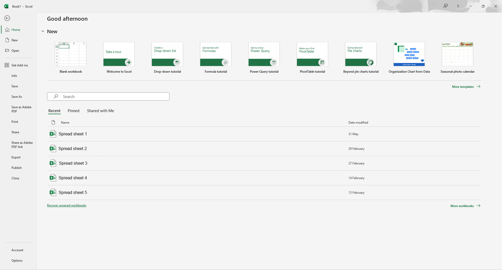
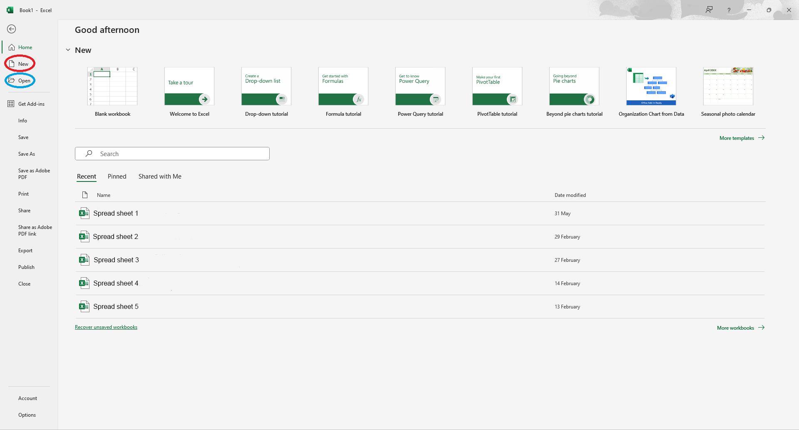
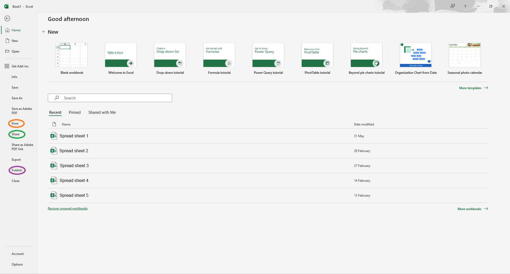

Tool bar
On the top of you screen, you should be able to see the tool bar. If you can't, your tool bar may be hidden. You can show the tool bar by clicking the three dots at the top right of the screen. On the menu bar, you can select File, Home, Insert, Page Layout, Formulas, Data, Review, View, Automate, and Help, by clicking on them, you can go to different tabs of the tool bar. (You may have different options but you should be able to go through this tutorial.)After clicking "Home" on the menu bar, you can copy, cut, and paste values in your spreadsheet.
You can also edit your font, font size, text color, cell color, and text alignment of the selected cell(s). You can also change the texts in the selected cell(s) to bold, italic, or underlined. The defalt text alignment should be middle left.
There are also more functions on the right of the tool bar, such as adding currency, adding percentage, editting formacts, insert and delete cells, sorting values, and more that you can try yourself.
Saving and opening files
To the left of "Home" on the menu bar, you should be able to see "File", after clicking it, you should be able to enter a page like the one shown below:
In this page, you can access other spreadsheets that you have created, you can also create new spreadsheets by clicking the "New" button (circled in red), and open saved spreadsheets on your computer by clicking the "Open" button (circled in blue).

In this page, you can also save, print, share, or export your spreadsheets by pressing their prespective button. (Circled in orange, green, and purple.)
